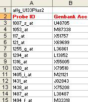
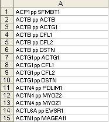
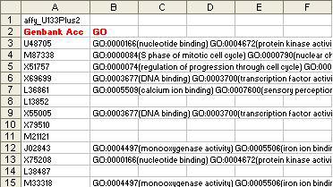
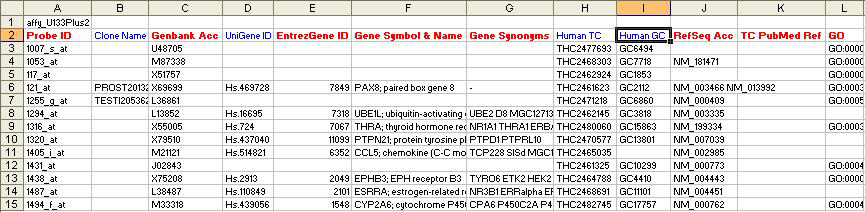
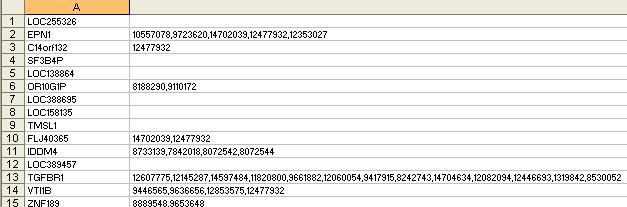
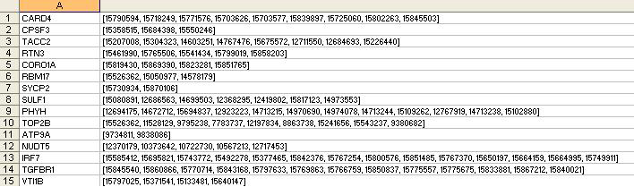

Appendix: Bayesian Network & Literature Mining supporting files description
Using Support Files created for standard arrays
- Support file FTP Location: Human, Mouse & Rat
- File Naming Conventions:
- All BN/LM related files ends with *_BN.zip.
- E.g.: affy_HG-U133_Plus_2_BN.zip
- All files start with array/chip vendor name, affy for Afymetrix
- E.g.: affy_HG-U133_Plus_2_BN.zip
- Vendor name is followed by chip/array name
- E.g.: affy_HG-U133_Plus_2_BN.zip
- Contents of zip files:
- All zip files contain 6 files
- affyID_accession.txt
- res.txt
- symArtsGeneDb.txt
- symArtsPubmed.txt
- all_ppi.txt
- gbGO.txt
- Steps to use the pre-designed support files. Example array chosen for illustration is Affymetrix Human U133 Plus 2. To use any array follow the steps below:
- Download your species & array specific file from the FTP location mentioned above. E.g. affy_HG-U133_Plus_2_BN.zip
- Extract the contents of the zip under the following MeV directory: ./data/BN_files/
- Once extracted, a folder by the array name will be created. In this case if the example file was downloaded, the following location will now exist:./data/BN_files/affy_HG-U133_Plus_2_BN
- Verify all 6 files exist.
- From Mev launch LM or BN module.
- In the start-up dialogue make sure the ‘File(s) Location’ box points to the folder where the supporting files are downloaded for the species and array concerned. If the example array was chosen, the text box should point to ./data/BN_files/affy_HG-U133_Plus_2_BN folder.
- Now you are ready to start the algorithm.
Rules for creating custom BN/LM support files:
- All files should reside under the same directory. This directory should be chosen as “File(s) Location” during analysis as shown in BN/LM analysis section.
- All file names should be exactly as shown here.
- All column names (headers) should be named exactly as described here.
- Some files may not have column headers/names viz. symArtsGeneDb.txt, symArtsPubmed.txt,all_ppi.txt.
- All columns with or without headers should appear in the exact same order as shown here.
- NOTE: Examples of all the files described below are provided at the following location: ./data/BN_files, where ‘.’ Represents the directory where MeV is installed. The supporting files are created based on the dataset provided in the file ./data/BN_files/affy_U133plus2_dataset.txt
Files for BN and LM module:
- affyID_accession.txt

Notes:
- Both columns are mandatory along with the column names.
- The entry in the first line is mandatory but its content can be anything that describes the source of the data.
- “Genbank Acc”contains Genbank Accession numbers associated with each “Probe ID”.
- “Probe ID” here represents Affymetrix probe ids. This ID can be of any other type depending on the source of the data but it must follow these rules:
- The entry in this column must uniquely identify each row in the loaded dataset.
- Associated “Genbank Acc” information must be provided.
- The entry in this column must match the “Probe ID” entry in the res.txt file.
- all_ppi.txt

Notes:
- This file is only required if protein-protein interaction is selected as the source of priors for network.
- This file does not have a column header/name
- This file has just 1 column
- Each entry represents a protein-protein interaction (pp) where X pp Y means an interaction between gene X & gene Y.
- Gene X and Y are represented by their official gene symbol.
- gbGO.txt

Notes:
- This file is only required if GO Terms are selected as an option in the initial BN or LM window for directing network edges (which is not very mature at this stage). DFS is strongly suggested as an alternative.
- This file has 2 columns which have same name and order as shown in the sample.
- The “Genbank Acc” column contains genbank accession numbers associated with each probe in the cluster selected for analysis or all the genbank accession numbers associated with all the probes in the entire dataset.
- The “GO” column contains multiple GO entries separated by whitespace associated with each genbank accession number.
E.g.: GO:000015(nucleotide binding) GO:0000016(protein kinase)
- res.txt

Notes:
- There are 12 columns
- All columns should appear in the exact order as shown.
- All columns colored red must have appropriate entries as indicated by the column names.
- All columns colored blue may be empty, but the columns should be present as empty columns.
- “Probe ID” here represents Affymetrix probe ids. This ID can be of any other type depending on the source of the data but it must follow these rules:
- The entry in this column must uniquely identify each row in the loaded dataset.
- Associated “Genbank Acc” information must be provided.
- The entry in this column must match the “Probe ID” entry in the affyID_accession.txt file.
- “Clone Name” column is mandatory but it can be empty.
- “Genbank Acc” contains Genbank Accession numbers associated with each “Probe ID”.
- “UniGene ID” column is mandatory but it can be empty.
- “EntrezGene ID” contains entrez gene Ids (previously locuslink ID) wherever available that best represents the “Probe ID”.
- The Gene Symbol & Name column has Gene Symbol and description. They are separated by the delimiter “;”.
- “Gene Synonyms” are aliases for the official gene symbol separated by whitespace.
- “Human TC” & “Human GC” columns are mandatory but can be empty.
- “RefSeq Acc” column contains mRna RefSeq ID wherever available that best represents the “Probe ID”.
- “TC PubMed Ref” column contains?????????
- “GO” column is formatted in the same way as described in the previous file’s description (#3).
- symArtsGeneDb.txt

Notes:
- There are 2 columns
- There are no column headers/names
- The columns should appear in the exact order as shown.
- The 1st column contains official Gene Symbol
- The 2nd column contains PubMed IDs. The PubMed IDs are obtained by querying the EntrezGene annotation for the given gene.
- The 2nd column contains multiple values which are separated by the delimiter “,”.
- symArtsPubmed.txt

Notes:
- There are 2 columns
- There are no column headers/names
- The columns should appear in the exact order as shown.
- The 1st column contains official Gene Symbol
- The 2nd column contains PubMed IDs. The PubMed IDs are obtained by querying Pubmed abstracts (text query) for the gene symbol, and then collecting all the PubmedIDs of those abstracts that match that gene symbol.
- The 2nd column contains multiple values which are separated by the delimiter “,”.
- Sample Label file for BN analysis:
Notes:
- Once samples are assigned to classes in the classification window, shown, the classification can be saved into a text file by clicking the button.
- The file names could be anything the user chooses with any extension the user wants. We suggest using .txt as an extension.
- On subsequent analysis of the same data with same sample classification, the class assignments can be loaded automatically from the saved file by clicking the “Load Settings” button and selecting the previously saved file.